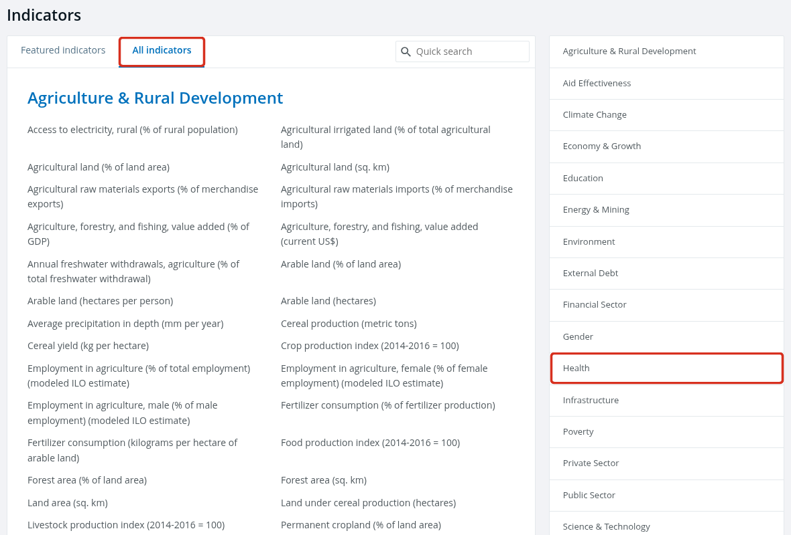
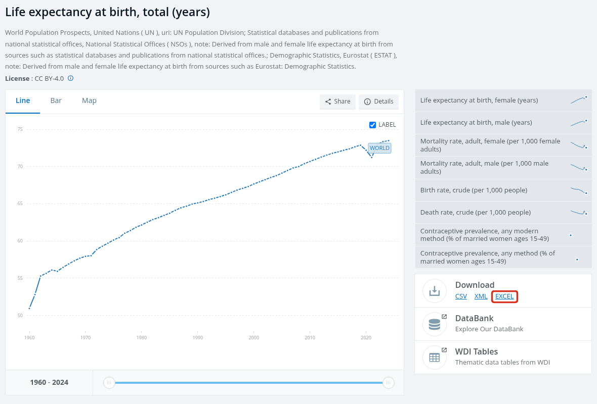
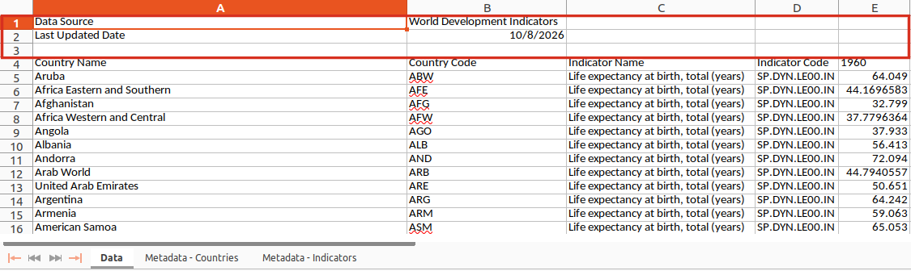
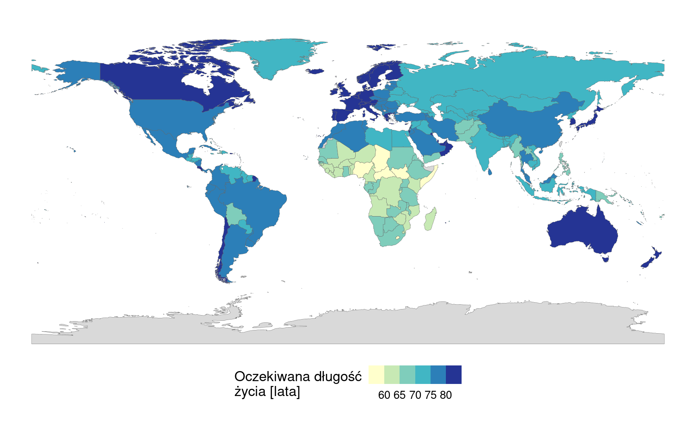

Załącznik przedstawia cały potok przygotowania danych z serwisu Banku Światowego: od pobrania pliku Excel, przez wczytanie i połączenie arkuszy, po zapis tabeli do pliku CSV i warstwy z granicami państw do pliku GeoPackage. Przykład dotyczy oczekiwanej długości życia. Pełny kod na końcu załącznika (Sekcja E.9) pozwala przygotować w ten sam sposób plik innego wskaźnika o takim samym układzie arkuszy.
E.1 Wskaźniki Banku Światowego
Bank Światowy udostępnia dane na stronie https://data.worldbank.org/indicator. Wskaźnik (ang. indicator) to pojedyncza miara podawana dla państw i grup państw w kolejnych latach, np. oczekiwana długość życia albo lesistość. Każdy wskaźnik ma:
nazwę z jednostką w nawiasie, np. Life expectancy at birth, total (years);
kod, np. SP.DYN.LE00.IN, który jest także częścią adresu strony wskaźnika i nazwy pobranego pliku;
opis: definicję i źródło danych.
Zakładka All indicators porządkuje wskaźniki w 20 grup tematycznych, np. Health, Environment i Education (Rycina E.1).

Rycina E.1: Strona Indicators: zakładka All indicators i grupa tematyczna Health (czerwone ramki). Źródło: Bank Światowy, https://data.worldbank.org/indicator, zrzut ekranu z 4.11.2026.
Przykład wykorzystuje wskaźnik Life expectancy at birth, total (years), czyli oczekiwaną długość życia w chwili urodzenia, podaną w latach, łącznie dla kobiet i mężczyzn. Według opisu wskaźnika w pobranym pliku jest to liczba lat, jaką przeżyłby noworodek, gdyby wzorce umieralności z chwili jego urodzenia pozostały niezmienione przez całe jego życie.
W panelu Download po prawej stronie kliknij odnośnik EXCEL (Rycina E.2).
Przenieś pobrany plik do folderu dane/ obok pliku .qmd.

Rycina E.2: Strona wskaźnika: odnośnik EXCEL w panelu Download (czerwona ramka). Nad wykresem podano licencję danych. Źródło: Bank Światowy, https://data.worldbank.org/indicator/SP.DYN.LE00.IN, zrzut ekranu z 4.11.2026.
Dalsza część załącznika wykorzystuje plik dane/API_SP.DYN.LE00.IN_DS2_en_excel_v2_1292.xls, zaktualizowany przez Bank Światowy 8 października 2026 roku. Dane są udostępniane na licencji CC BY 4.0. Plik pobrany później może mieć inną nazwę i zawierać nowsze wartości; nazwę pliku zmienia się wtedy w obiekcie plik_wb.
E.3 Wczytanie arkusza z danymi
Pierwsze wiersze arkusza Data zawierają informacje o pliku, a tabela zaczyna się niżej (Rycina E.3):
Wiersz
Zawartość
1
źródło danych: Data Source, World Development Indicators
2
data aktualizacji: Last Updated Date
3
wiersz pusty
4
nazwy kolumn tabeli
od 5
dane: jeden wiersz dla państwa albo grupy państw

Rycina E.3: Początek arkusza Data w programie LibreOffice Calc: wiersze 1–3 pomijane przy wczytaniu (czerwona ramka), od wiersza 4 tabela. Na dole fragmentu widoczne są zakładki trzech arkuszy pliku.
Wiersze 1–3 nie należą do tabeli, dlatego nie są wczytywane. Funkcja read_excel() traktuje pierwszy wczytany wiersz jako nazwy kolumn. Bez pominięcia wierszy nazwami kolumn stają się więc wartości z wiersza 1, a rzeczywiste nazwy kolumn trafiają do danych.
# pakiety: tidyverse (przetwarzanie danych i wykresy), readxl (pliki Excel),# sf (dane przestrzenne), rnaturalearth (granice państw)library(tidyverse)library(readxl)library(sf)library(rnaturalearth)# ścieżka do pobranego plikuplik_wb <-"dane/API_SP.DYN.LE00.IN_DS2_en_excel_v2_1292.xls"# nazwy arkuszy w plikuexcel_sheets(plik_wb)
# wczytanie arkusza bez pominięcia wierszy: pierwsze trzy nazwy kolumn są nieprawidłowenames(read_excel(plik_wb, sheet ="Data"))[1:3]
[1] "Data Source" "World Development Indicators"
[3] "...3"
# wczytanie arkusza Data z pominięciem trzech pierwszych wierszydane_wb <-read_excel(plik_wb, sheet ="Data", skip =3)# liczba wierszy i kolumndim(dane_wb)
[1] 266 70
# pierwsze kolumny i pierwsze wiersze tabelidane_wb |>select(1:5) |>head(4)
# A tibble: 4 × 5
`Country Name` `Country Code` `Indicator Name` `Indicator Code` `1960`
<chr> <chr> <chr> <chr> <dbl>
1 Aruba ABW Life expectancy at birth, tota… SP.DYN.LE00.IN 64.0
2 Africa Eastern and Southern AFE Life expectancy at birth, tota… SP.DYN.LE00.IN 44.2
3 Afghanistan AFG Life expectancy at birth, tota… SP.DYN.LE00.IN 32.8
4 Africa Western and Central AFW Life expectancy at birth, tota… SP.DYN.LE00.IN 37.8
Obliczenia w R.
excel_sheets() z pakietu readxl zwraca nazwy arkuszy pliku Excel. Plik zawiera arkusze Data, Metadata - Countries i Metadata - Indicators. Ostatni zawiera opis wskaźnika.
read_excel() wczytuje arkusz wskazany argumentem sheet, a skip = 3 pomija trzy pierwsze wiersze (Sekcja 3.12). Funkcja obsługuje pliki .xls i .xlsx.
Tabela dane_wb liczy 266 wierszy i 70 kolumn. Cztery pierwsze kolumny opisują wiersz: nazwa i kod państwa albo grupy państw oraz nazwa i kod wskaźnika. Pozostałe kolumny zawierają wartości wskaźnika w latach 1960–2025, po jednej kolumnie na rok. Kolumna 2025 w tym pliku nie zawiera wartości.
E.4 Połączenie z arkuszem opisującym kraje
Arkusz Metadata - Countries przypisuje każdemu kodowi region i grupę dochodową. Tabele łączy kod kraju. W nazwach kolumn nie stosuje się spacji, ponieważ nazwę ze spacją trzeba w R zapisywać w odwrotnych apostrofach, np. `Country Code`. Dlatego przed połączeniem nazwy kolumn zostają zmienione.
# wczytanie arkusza z opisem krajów; tabela zaczyna się w pierwszym wierszukraje_wb <-read_excel(plik_wb, sheet ="Metadata - Countries")names(kraje_wb)
# nazwy kolumn bez spacji i wybór kolumn potrzebnych w tabeli wynikowejkraje_wb <- kraje_wb |>select(country_code =`Country Code`, region = Region,income_group = IncomeGroup, table_name = TableName)# usunięcie kolumn z nazwą i kodem wskaźnika; nazwy kolumn arkusza Data bez spacjidane_wb <- dane_wb |>select(-`Indicator Name`, -`Indicator Code`) |>rename(country_name =`Country Name`, country_code =`Country Code`)# połączenie według kodu kraju i ustalenie kolejności kolumndlugosc_zycia <- dane_wb |>left_join(kraje_wb, by ="country_code") |>select(country_name, country_code, region, income_group, table_name, everything())dlugosc_zycia |>select(1:5) |>head(4)
# A tibble: 4 × 5
country_name country_code region income_group table_name
<chr> <chr> <chr> <chr> <chr>
1 Aruba ABW Latin America & Caribbean High income Aruba
2 Africa Eastern and Southern AFE <NA> <NA> Africa Eastern a…
3 Afghanistan AFG Middle East & North Africa Low income Afghanistan
4 Africa Western and Central AFW <NA> <NA> Africa Western a…
Obliczenia w R.
select() może jednocześnie wybrać kolumnę i zmienić jej nazwę: zapis region = Region tworzy kolumnę region z kolumny Region. Kolumna SpecialNotes nie została wybrana, więc nie przechodzi dalej.
Znak - w select() usuwa wskazane kolumny. Kolumny Indicator Name i Indicator Code mają w każdym wierszu tę samą wartość, ponieważ plik zawiera jeden wskaźnik.
rename() zmienia nazwy wskazanych kolumn i pozostawia wszystkie pozostałe, dlatego kolumny lat pozostają w tabeli.
left_join() zachowuje wszystkie wiersze tabeli dane_wb i dopisuje kolumny z tabeli kraje_wb w wierszach o tym samym kodzie (Sekcja 3.10).
everything() w select() oznacza wszystkie pozostałe kolumny, tu: kolumny lat.
Kolumny country_name i table_name zawierają nazwy zapisane w dwóch wersjach. Wśród krajów nazwy te różnią się w 5 wierszach, np. Turkiye i Türkiye.
E.5 Wybór krajów
Arkusz Data zawiera także wiersze dla grup krajów, np. WLD (świat), ARB (świat arabski) i HIC (kraje o wysokich dochodach). Grupy te nie mają przypisanego regionu ani grupy dochodowej. Wybór wierszy z podanym regionem pozostawia więc wyłącznie kraje.
# wiersze bez regionu: grupy krajówdlugosc_zycia |>filter(is.na(region)) |>select(country_code, country_name, region) |>head(4)
# A tibble: 4 × 3
country_code country_name region
<chr> <chr> <chr>
1 AFE Africa Eastern and Southern <NA>
2 AFW Africa Western and Central <NA>
3 ARB Arab World <NA>
4 CEB Central Europe and the Baltics <NA>
# liczba wierszy bez regionusum(is.na(dlugosc_zycia$region))
[1] 49
# pozostawienie wierszy z podanym regionemkraje <- dlugosc_zycia |>filter(!is.na(region))# liczba krajów w regionachkraje |>count(region)
# A tibble: 7 × 2
region n
<chr> <int>
1 East Asia & Pacific 37
2 Europe & Central Asia 58
3 Latin America & Caribbean 42
4 Middle East & North Africa 23
5 North America 3
6 South Asia 6
7 Sub-Saharan Africa 48
Obliczenia w R.
is.na() zwraca TRUE dla braku danych, a znak ! odwraca warunek: !is.na(region) wybiera wiersze, w których kolumna region zawiera wartość (Sekcja 3.5).
Wiersze bez regionu są 49: 48 grup krajów opisanych w arkuszu Metadata - Countries bez regionu oraz wiersz INX (Not classified), którego kodu nie ma w tym arkuszu i który po połączeniu otrzymał NA.
Tabela kraje liczy 217 wierszy. Bank Światowy podaje wartości dla krajów i gospodarek, dlatego wśród nich znajdują się także terytoria niebędące państwami, np. Aruba i Bermudy. Wartość wskaźnika w 2024 roku jest podana dla wszystkich 217 jednostek.
Kolumna
Znaczenie
Jednostka
country_name
nazwa kraju z arkusza Data
—
country_code
trzyliterowy kod kraju
—
region
region Banku Światowego, 7 kategorii
—
income_group
grupa dochodowa Banku Światowego, 4 kategorie
—
table_name
nazwa kraju z arkusza Metadata - Countries
—
1960, …, 2025
oczekiwana długość życia w chwili urodzenia w danym roku
lata
E.6 Połączenie z granicami państw
Granice państw pochodzą z bazy Natural Earth (domena publiczna). Z obiektu granic pozostają tylko kod kraju, według którego następuje połączenie, oraz geometria; wszystkie atrybuty pochodzą z tabeli kraje.
# granice państw: 169 kolumn, w tym geometriagranice <-ne_countries(scale ="medium", returnclass ="sf")dim(granice)
[1] 242 169
# pozostawienie kodu kraju (pod nazwą country_code) i geometriigranice <- granice |>select(country_code = iso_a3_eh)names(granice)
[1] "country_code" "geometry"
# połączenie tabeli atrybutów z granicami według kodu krajukraje_granice <- granice |>left_join(kraje, by ="country_code")dim(kraje_granice)
[1] 242 72
# kraje z tabeli, które nie mają odpowiednika w granicachkraje |>anti_join(granice, by ="country_code") |>select(country_code, country_name)
# A tibble: 3 × 2
country_code country_name
<chr> <chr>
1 CHI Channel Islands
2 GIB Gibraltar
3 XKX Kosovo
Obliczenia w R.
select() zastosowany do obiektu sf zawsze zachowuje kolumnę z geometrią, dlatego wynik zawiera kolumny country_code i geometry, choć geometrii nie wymieniono (Sekcja 5.1).
Kod kraju pochodzi z kolumny iso_a3_eh. Kolumna iso_a3 ma wartość -99 m.in. dla Francji i Norwegii, więc połączenie według niej pominęłoby te państwa.
left_join() zachowuje wszystkie 242 wiersze obiektu granice (Sekcja 5.4). Obiekt sf jest pierwszym argumentem, dlatego wynik pozostaje obiektem sf.
anti_join() zwraca wiersze pierwszej tabeli, które nie mają odpowiednika w drugiej.
Wynik połączenia wymaga trzech uwag:
Trzy jednostki z tabeli kraje nie mają granic w wyniku: Wyspy Normandzkie (CHI), Gibraltar (GIB) i Kosowo (XKX). W warstwie Natural Earth Jersey i Guernsey mają osobne kody (JEY, GGY), Kosowo ma w kolumnie iso_a3_eh wartość -99, a Gibraltaru warstwa nie zawiera.
26 wierszy nie ma atrybutów. Są to obszary bez odpowiednika w tabeli, np. Antarktyda i Tajwan, oraz obszary z kodem -99.
Kod AUS występuje w trzech wierszach: Australia, Wyspy Ashmore i Cartiera oraz terytorium Indian Ocean Ter. Wszystkie trzy otrzymują atrybuty Australii.
Mapa pozwala sprawdzić wynik połączenia (Rycina E.4). Nazwa kolumny rozpoczynająca się od cyfry wymaga odwrotnych apostrofów.
# mapa kontrolna: kolor państwa odpowiada klasie oczekiwanej długości życiaggplot(kraje_granice) +geom_sf(aes(fill =`2024`), colour ="grey40", linewidth =0.1) +scale_fill_fermenter(breaks =c(60, 65, 70, 75, 80), palette ="YlGnBu",direction =1, na.value ="grey85") +labs(fill ="Oczekiwana długość\nżycia [lata]") +theme_void(base_size =13) +theme(legend.position ="bottom")

Rycina E.4: Oczekiwana długość życia w chwili urodzenia w 2024 roku; szary kolor — obszary bez danych. Dane: Bank Światowy; granice: Natural Earth
E.7 Zapis wyników
# zapis tabeli krajów do pliku CSVwrite_csv(kraje, "dane/wb_dlugosc_zycia.csv")# zapis tabeli połączonej z granicami do pliku GeoPackage;# delete_dsn = TRUE zastępuje plik zapisany wcześniejst_write(kraje_granice, "dane/wb_dlugosc_zycia.gpkg", delete_dsn =TRUE, quiet =TRUE)
# sprawdzenie zapisanych plików: wczytanie i liczba wierszy oraz kolumntabela_csv <-read.csv("dane/wb_dlugosc_zycia.csv", encoding ="UTF-8")dim(tabela_csv)
write_csv() z pakietu readr (część tidyverse) zapisuje tabelę z przecinkiem jako separatorem i kodowaniem UTF-8, dlatego litery takie jak ç w kolumnie table_name nie ulegają zmianie.
st_write() z pakietu sf zapisuje obiekt przestrzenny. Format pliku wynika z rozszerzenia .gpkg.
st_read() i read.csv() dodają literę X przed nazwą kolumny rozpoczynającą się od cyfry. Po ponownym wczytaniu kolumna 2024 ma więc nazwę X2024.
E.8 Źródła
Bank Światowy, wskaźnik Life expectancy at birth, total (years), kod SP.DYN.LE00.IN, baza World Development Indicators, licencja CC BY 4.0: https://data.worldbank.org/indicator/SP.DYN.LE00.IN. Bank Światowy podaje jako źródła m.in. World Population Prospects (ONZ), krajowe urzędy statystyczne i Eurostat.
Poniższy blok zawiera cały kod przygotowania danych; jest on dostępny także jako plik kod/E_bank_swiatowy.qmd. Aby przygotować inny plik, należy zapisać go w folderze dane/ i podać jego nazwę w obiekcie plik_wb. Funkcja read_excel() wczytuje pliki .xls i .xlsx. Nazwy plików wynikowych powstają z kodu wskaźnika, np. dane/wb_SP.DYN.LE00.IN.csv i dane/wb_SP.DYN.LE00.IN.gpkg, dlatego wyniki dla różnych wskaźników nie zastępują się nawzajem. Kod zakłada układ pliku opisany w Sekcja E.3: arkusze Data i Metadata - Countries oraz tabelę arkusza Data rozpoczynającą się w wierszu 4.
# pakiety: tidyverse (przetwarzanie danych), readxl (pliki Excel),# sf (dane przestrzenne), rnaturalearth (granice państw)library(tidyverse)library(readxl)library(sf)library(rnaturalearth)# nazwa pobranego pliku: jedyny element do zmianyplik_wb <-"dane/API_SP.DYN.LE00.IN_DS2_en_excel_v2_1292.xls"# arkusz Data z pominięciem trzech pierwszych wierszydane_wb <-read_excel(plik_wb, sheet ="Data", skip =3)# kod wskaźnika do nazw plików wynikowychkod_wskaznika <- dane_wb$`Indicator Code`[1]# usunięcie kolumn z nazwą i kodem wskaźnika; nazwy kolumn bez spacjidane_wb <- dane_wb |>select(-`Indicator Name`, -`Indicator Code`) |>rename(country_name =`Country Name`, country_code =`Country Code`)# arkusz z opisem krajów: wybór kolumn i nazwy bez spacjikraje_wb <-read_excel(plik_wb, sheet ="Metadata - Countries") |>select(country_code =`Country Code`, region = Region,income_group = IncomeGroup, table_name = TableName)# połączenie według kodu kraju i pozostawienie wierszy z regionem, czyli bez grup krajówkraje <- dane_wb |>left_join(kraje_wb, by ="country_code") |>select(country_name, country_code, region, income_group, table_name, everything()) |>filter(!is.na(region))# granice państw: tylko kod kraju i geometriagranice <-ne_countries(scale ="medium", returnclass ="sf") |>select(country_code = iso_a3_eh)# połączenie tabeli atrybutów z granicamikraje_granice <- granice |>left_join(kraje, by ="country_code")# zapis tabeli do pliku CSV i tabeli z granicami do pliku GeoPackagewrite_csv(kraje, paste0("dane/wb_", kod_wskaznika, ".csv"))st_write(kraje_granice, paste0("dane/wb_", kod_wskaznika, ".gpkg"),delete_dsn =TRUE, quiet =TRUE)
paste0() łączy napisy bez odstępu i tworzy w ten sposób ścieżkę pliku wynikowego.
E.10 Wykorzystanie danych Banku Światowego w raportach statystycznych
Przygotowana tabela zawiera wartości wskaźnika dla krajów w kolejnych latach oraz dwie zmienne grupujące: region i grupę dochodową. Pytanie badawcze określa więc wybór jednostek (kraj, kilka krajów, region, grupa dochodowa, świat) i wybór lat (jeden, dwa, cały okres). Poniższe podejścia mogą stanowić osobne raporty albo sekcje większego raportu.
Jeden rok
Świat: rozkład wartości w krajach i ich rozmieszczenie przestrzenne.
Porównanie między regionami.
Porównanie grup dochodowych: statystyki opisowe w grupach.
Porównanie krajów należących do danego regionu.
Porównanie krajów o najwyższych i najniższych wartościach na świecie albo w regionie w danym roku.
Jedna grupa dochodowa: rozkład wartości i różnice między regionami wewnątrz tej grupy.
Pozycja jednego kraju: wartość kraju na tle rozkładu świata, regionu albo grupy dochodowej.
Dwa lata
Państwa świata: zmiany wartości między latami i ich przestrzenne zróżnicowanie.
Region: jak zmieniły się państwa danego regionu lub wartości w tym regionie między latami.
Porównanie regionów między latami.
Porównanie grup dochodowych: zmiana wartości w każdej grupie.
Kraj albo kilka krajów: wartości z obu lat i ich różnica.
Kraje o największej i najmniejszej zmianie: na świecie albo w regionie.
Zależność między latami: wartość w roku początkowym i końcowym w krajach.
Wiele lat
Jeden kraj: przebieg wartości w całym okresie i okresy spadku.
Kilka krajów: porównanie przebiegów, np. krajów sąsiednich.
Kraj na tle świata albo regionu: przebieg wartości dla kraju na tle zakresu wartości pozostałych krajów.
Region albo grupa dochodowa: zmiany statystyk w kolejnych latach.
Porównanie regionów.
Tempo zmian: różnice między kolejnymi latami albo pięcioleciami i lata, w których wartość spadała.
Wybrane lata, np. co 10 lat (porównanie wartości danych).